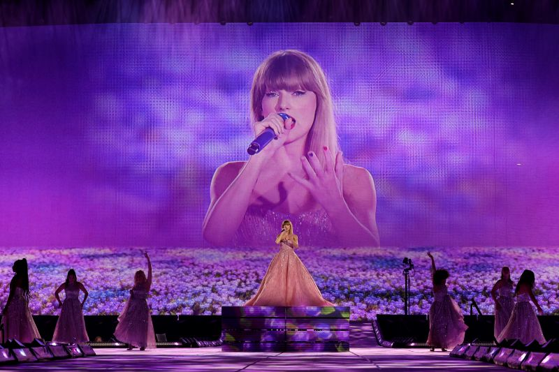

Trump slams trial heading into Day 4 of jury selection
He complained about sitting in the courtroom ‘all day long,’ but he’s been using the trial to boost his campaign and fundraising
- Potential alternates say they think Trump is being treated ‘fairly’ in the case
- Alternates ensure a trial can continue if a seated juror cannot proceed. Here’s when they may step in
- Takeaways from Day 3’s topsy-turvy jury selection
- Trump might have dozed off in court. Here’s how that could come back to bite him
- Trump hush money trial judge scolds press after juror is dismissed over fears she had been identified
Watch the latest CNN Headlines
Taylor Swift’s business brilliance
Taylor Swift releases surprise double album
Stayed up all night? Here’s how to feel better
A comedian set out to find a husband in a year. Here's how it went down
Columnist sorry for ‘oafish’ remark to Caitlin Clark. The controversy isn’t over